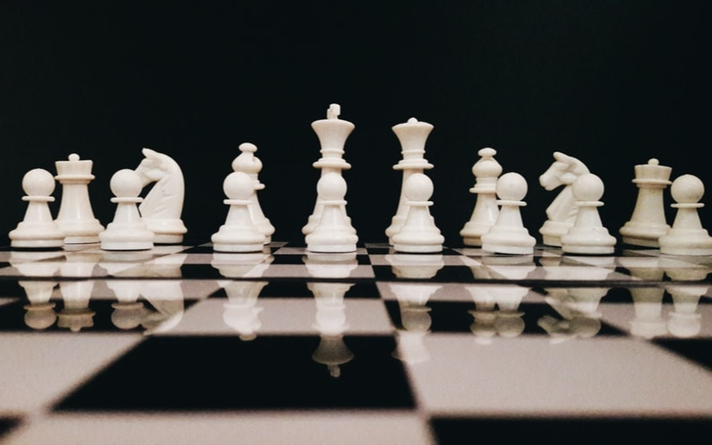

Šaha puzle

Uzliec matu trīs gājienos!
Ejot ar baltajām figūrām
Labākais šaha spēlētājs
Šobrīd labākais šaha spēlētājs pasaulē ir Magnuss Karlsens. Magnusam pieder pasaules šaha čempiona tituls jau kopš 2013. gada.
Magnuss ir dzimis Norvēģijā, 1990. gadā, un šahu iemācījies spēlēt, kad bijis piecus gadus vecs. Jau no agra vecuma viņš tika uzskatīts par brīnumbērnu un 13 gadu vecumā kļuva par vienu no visu laiku jaunākajiem lielmeistariem. Magnuss ir uzvarējis neskaitāmos pasaules čempionātos, starptautiskos turnīros un tiešsaistes pasākumos. Viņš ir pasaules labākais spēlētājs visos šaha formātos: no ilgām turnīra spēlēm līdz tiešsaistes zibens turnīriem.
Šaha noteikumi
Šaha Noteikumi neuzskaita visas iespējamās situācijas, kuras rodas spēles procesā un neparedz organizatorisku jautājumu risināšanu. Tajos gadījumos, kad Noteikumu punkti nevar noregulēt situāciju, lēmumi jāpieņem uz Noteikumos apskatītu analoģisku situāciju pamata. Noteikumi paredz, ka tiesnešiem piemīt nepieciešamā kompetence, veselais saprāts un absolūta objektivitāte. Bez tam, detalizēti Noteikumi liegtu tiesnesim pieņemt lēmumu, kuru diktē taisnīgums, loģika un konkrēti apstākļi. FIDE aicina visas šaha federācijas pieņemt šo viedokli. Jebkurai Federācijai ir tiesības ieviest detalizētākus Noteikumus, bet tie: nedrīkst būt pretrunā ar oficiālajiem FIDE šaha Noteikumiem; to pielietojums ierobežots ar dotās federācijas teritoriju; nav spēkā esoši jebkurā FIDE mačā, čempionātā vai kvalifikācijas sacensībās, vai turnīrā, kurā tiek noteikti FIDE nosaukumi vai reitings. Spēles pamatnoteikumi Punkts 1: Šaha spēles raksturs un mērķi 1.1. Šahu spēlē divi partneri, kuri pēc kārtas pārvieto savas figūras uz kvadrātveida galdiņa, kuru sauc par „šaha” galdiņu. Spēlētājs, kuram ir baltās figūras, uzsāk partiju. Šahists iegūst gājiena tiesības tikai pēc tam, kad viņa partneris pabeidzis gājiemu (sk. Punktu 6.7). 1.2. Katra spēlētāja mērķis ir uzbrukt pretinieka karalim tādā veidā, lai pretinieka karalim nav nekāda glābiņa. Skaitās, ka spēlētājs, kurš sasniedz šo mērķi, ir „nomatojis” pretinieka karali un uzvarējis partiju. Partneris, kura karalis nomatots, zaudējis partiju. Atstāt savu karali zem uzbrukuma un pakļaut to uzbrukumam nav atļauts. Pretinieka karaļa ņemšana aizliegta. 1.3. Ja pozīcija tāda, ka neviens no partneriem nevar ielikt matu, partija beidzas neizšķirti. Punkts 2: Figūru sākumpozīcija uz galdiņa 2.1. Šaha galdiņš sastāv no 64 vienādiem kvadrātiem (8x8), pārmaiņus gaišiem („baltie” lauciņi) un tumšiem („melnie ” lauciņi). Tas novietots starp spēlētājiem tā, lai tuvākais stūra lauciņš pa labi no spēlētāja būtu balts. 2.2. Partijas sākumā vienam spēlētājam ir 16 gaišas figūras („baltie”), otram-16 tumšas figūras („melnie”). Šīs figūras parasti tiek apzīmētas ar atbilstošiem simboliem un ir sekojošas: Balts karalis K Melns karalis k Balta dāma Q Melna dāma q Divi balti torņi R Divi melni torņi r Divi balti laidņi L Divi melni laidņi l Divi balti zirgi N Divi melni zirgi n Astoņi balti bandinieki P Astoņi melni bandinieki p 2.4. Astoņas kvadrātu vertikālās rindas saucas „vertikāles”. Astoņas kvadrātu horizontālās rindas saucas „horizontāles”. Taisnas vienas un tās pašas krāsas kvadrātu līnijas, kas iet no galdiņa malas līdz blakus malai, saucas „diagonāles”. Punkts 3: Figūru gājieni 3.1. Nav atļauts darīt gājienu ar figūru uz lauciņu, kuru aizņem tās pašas krāsas figūra. Ja figūra iet uz lauciņu, kuru aizņem partnera figūra, pēdējā tiek ņemta un noņemta no šaha galdiņa kā tā paša gājiena daļa. Par figūru saka, ka tā uzbrūk partnera figūrai, ja šī figūra var veikt ņemšanu uz šī lauciņa, saskaņā ar Punktiem 3.2-3.8. Figūra uzbrūk lauciņam pat tad, ja tā nevar iet uz šo lauciņu tā kā šīs pašas krāsas karalis atradīsies zem sitiena. 3.2. Laidnis var iet uz jebkuru diagonāles, uz kuras tas atrodas, lauciņu.
šahs
